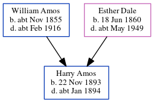

Harry Amos 1893 - c1894
[ Home ] | [ Calendar ] | [ Surnames Index ] | [ Census Index ] | [ Family History ]The child of William Amos (a railroad platelayer) and Esther Dale (a domestic duties), Harry Amos, the first cousin twice-removed on the father's side of Nigel Horne, was born in Dover, Kent, England on Nov 22, 18931,2,3 and baptized in Buckland, Kent, England on Dec 31, 1893.
He died c. Jan 1894 in Dover2,4 and was buried at St Andrew's Church in Buckland on Jan 10, 18944.
Parents
- William Austin was born c. Nov 1855
- Esther Louisa was born on Jun 18, 1860
Citations
- England & Wales births 1837-2006 - Findmypast
- England & Wales deaths 1837-2007 - Findmypast
- Kent Baptisms - Findmypast
- Kent Burials - Findmypast
Media
England & Wales births 1837-2006 - BMD/B/1893/4/AZ/000011/185
England & Wales deaths 1837-2007 - BMD/D/1894/1/AZ/000008/320
Kent Baptisms - GBPRS/CANT/B/96032838
Kent Burials - GBPRS/CANT/D/95311953
Family Tree
Generated by ged2site. Last updated on Jun 11, 2024